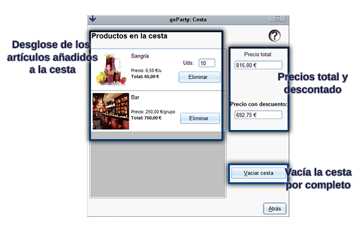
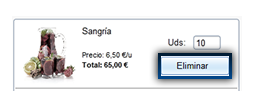

La ventana de la cesta es accesible desde cualquier parte del proceso de encargo de la fiesta por medio del botón mostrado a continuación y que se encuentra en la esquina superior derecha de la pantalla, también puede desplegarse empleando el atajo Alt+C. La cesta muestra todos los artículos que has añadido a esta desde la pestaña de selección de artículos así como el precio total con y sin descuento del pedido realizado. Cada artículo muestra la imagen del mismo, el nombre, su precio, las unidades seleccionadas del mismo y el precio calculada en base a estas o al número de invitados. Si sitúas el ratón encima de la imagen del artículo también podrás ver su descripción.
Puedes eliminar un artículo añadido a la cesta usando el botón Eliminar que acompaña al mismo en el carro como se muestra en la imagen siguiente. Eliminar un artículo quitará todas las unidades añadidas del mismo y recalculará el precio mostrado. No se pueden eliminar artículos si has accedido a la cesta desde la pestañas de introducción de datos o de confirmación, solo desde las de inicio de sesión o selección de artículos.

El botón Vaciar carrito situado en la esquina inferior derecha de la ventana eliminará todos los artículos de la cesta y la volverá a dejar completamente vacía. No se puede vaciar el carrito si has accedido a la cesta desde la pestañas de introducción de datos o de confirmación, solo desde las de inicio de sesión o selección de artículos.

Para volver a la aplicación para continuar el proceso basta con cerrar la ventana de la cesta o hacer uso del boton Atrás